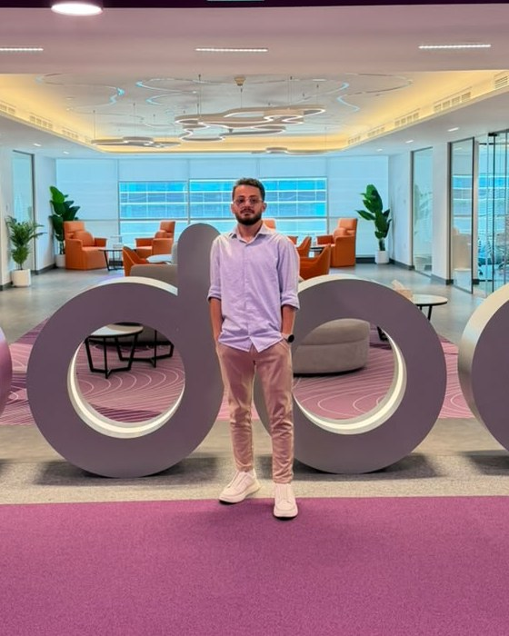
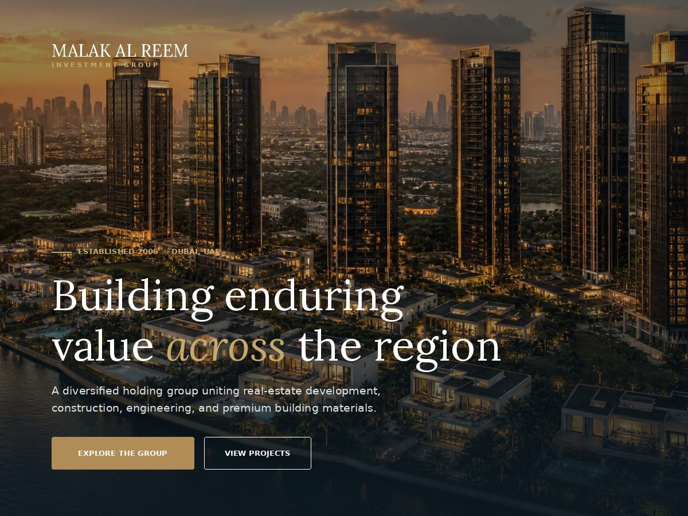
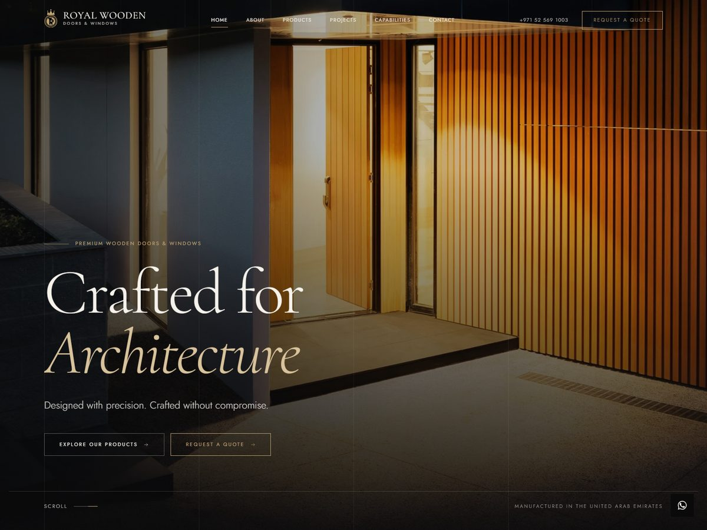

Techno-functional means both halves of the job. I gather the requirements and push back on them, design the data model and the flows — then write the Python, XML, OWL and SQL that make them real. No handover gap between what was promised and what got built.
Odoo 18 / 19 · Python · PostgreSQL
Ibrahim M
Ibrahim M
Elznad
ERP / Odoo Techno-Functional
I build the systems that pay people and track their work. Three years of sitting with the teams who do the job, modelling what they actually do, and shipping it as native Odoo modules that run in production.

- Experience
- 3 years
- Platform
- Odoo 18 / 19
- Code
- Python · OWL · SQL
Approach
How the work gets done
Most of my work starts with a process already running on spreadsheets or an quick configuration that has outgrown itself. I replace it with native modules: proper models, computed fields that recompute, security groups and multi-company record rules, and migration scripts so nothing is lost on the way over — while payroll still has to go out on time.
Correctness is the requirement, not a feature. Figures reconcile across every view, report and export; every change leaves an audit trail; access is governed by role and by company; and month-end closes without a spreadsheet on the side. A payroll system is judged in its second month, not in the demo.
Selected work
Systems running in production
Odoo 18
Construction payroll
Payroll for a multi-company construction group. Payslips driven by daily attendance, overtime split into regular and off-day hours priced at their own rates, per-project labour cost distribution, WPS and cash salary batches, salary attachments, advances, loans, fines and end-of-service — with an OWL dashboard and PDF payslips on top.
PythonOWLQWebMulti-company
Odoo 18
Biometric attendance
Pulls punches from BioCloud fingerprint devices over REST, turns them into daily worked hours and overtime, maps each device to the project it stands on, mirrors everything to native hr.attendance, and feeds the payroll engine — with a dashboard and pivot analysis for the site managers.
REST integrationCron jobsReporting
Odoo 19
Electronics repair workshop
A modular app that follows a device from the counter to the customer: reception, diagnosis, parts, repair, billing, delivery and reporting — each stage its own installable module, so the workshop can adopt them one at a time.
Modular designWorkflowsBilling
Odoo 19
Real-estate listings
Property management with types and tags, an offer workflow that enforces who can accept what, and availability and pricing rules that keep sold stock out of the pipeline.
Business logicAccess rules
Odoo 19
Estate accounting bridge
A thin module that raises the customer invoice the moment a property is sold, keeping the sales flow and the ledger in step without anyone re-typing a figure.
AccountingModule inheritance

WordPress
Investment group site
A bespoke enterprise theme for a holding group spanning real-estate development, construction, engineering, MEP, natural stone and wood manufacturing. Group companies, projects, insights and careers are all custom post types, so the group adds a subsidiary or a development without touching code — and taxonomies for status, location, type and sector drive the homepage filter and the related-project logic.
Its signature element is the group registry: a numbered, hairline-ruled index that makes the parent-to-subsidiary relationship read at a glance. A one-click, idempotent importer seeds the full company profile — six companies, eighteen developments, taxonomies, core pages, the primary menu and the bundled photography — and every brand, hero, contact and section toggle lives in a single Customizer panel. No page builder and no third-party plugin: accessible navigation, reduced-motion support, lazy-loaded imagery, and an enquiry form that validates and stores nothing.
PHPCustom post typesTaxonomiesCustomizerAccessibility
WordPress
Construction company site
The contracting arm of the same group, on its own theme built from the group design system — shared palette, type and components, so the two sites read as one family while the company keeps its own logo, imagery and voice.
Projects are dynamic, each with its own image gallery and a lightbox on the project page; news and events are managed the same way. On top of that: a sticky header with an accessible dropdown menu and a language switch, animated statistic counters, a newsletter and contact form, a three-column footer, and a proper link back to the parent group. Arabic is fully right-to-left, with the Arabic face swapped in automatically for Arabic content, and every setting sits in one Customizer panel.
PHPRTL / AR — ENDesign systemGalleriesCustomizer

Astro
Wooden joinery manufacturer site
An editorial site for a UAE manufacturer of wooden doors, windows and bespoke architectural woodwork — the woodwork arm of the same group. Built as a static Astro site so every page ships pre-rendered: the homepage is 53 KB of HTML over 34 KB of CSS, with 2 KB of JavaScript doing all of the motion and no framework behind it.
Company details, product ranges, projects and process stages live in typed data files, so editing copy never touches layout. Photography is optimised to WebP with responsive srcsets at build time, the brand crest is drawn as single-colour SVG that inverts cleanly across the ivory and charcoal sections, and scroll reveals run on one IntersectionObserver with full reduced-motion support. Per-page metadata, LocalBusiness structured data and a generated sitemap ship with it.
AstroTypeScriptStatic outputImage optimisationSEOAccessibility
Platform upgrade
Odoo 18 to 19, on a live production database
A multi-company database with payroll running on it every month, moved a major version without a day of downtime and without moving the data by hand. Most of the work is what happens before and after the jump.
-
Inventory first
Crawl every menu and window action to find the ones that open nothing, list the models no group can actually read, and record what each custom model still holds — so nothing is deleted on a hunch.
-
Prepare production, not staging
The upgrade platform works from production's own nightly backup, so the preparation has to land there. Whatever blocks the jump is switched off rather than dropped, in SQL so a broken registry cannot stop it, and switched straight back on once the backup is taken.
-
Port the modules
Drop what 19 removed —
numbercallonir.cron, the version prefix that made a module unloadable — and follow the contract intohr.version. The version-specific parts are chosen at import time, so the same branch boots on 18 and on 19 and the rollback stays real until the last minute. -
Prove it, then open the doors
The same inventory runs again on the upgraded database and is compared line by line with the one taken before: menus, actions, record counts and the figures that pay people. Nobody logs in until the two agree.
Configuration
Standard Odoo, wired to how the business actually runs
Not every problem needs a custom module. These are the four areas configured on standard Odoo — read first, then set up so the figures come out right on their own.
Payroll
Payroll
Salary structures and rules on standard Payroll, one set per company. The rules live in git and are written into the structure from there, with a checker that reports every place the rules on screen and the ones in the repository disagree — the net rule included, so an edit to it cannot pass unseen.
An overtime hour is priced off the basic at its ruleset's multiplier,
rules may only use the names safe_eval allows, and a rule
that cannot compute fails loudly instead of quietly paying zero.
Salary structuresSalary rulesOvertime rulesetssafe_eval
Attendance
Attendance
The attendance engine reproduced as a salary rule, with a test that
proves the payslip and the punches agree. Each employee's weekly off
day is read from their own punch history rather than assumed, and
badges are compared in the shape hr.employee actually
stores them.
Punches also become timesheet hours on the right project, written in batches so a backfill of a whole period can finish in one run.
Work entriesTimesheetsOvertimeTested rules
HR
HR & working schedules
The working schedules are the ground payroll computes on, so they are straightened first: the broken ones repaired, the merely unusual ones held back for a human decision instead of being overwritten.
Public holidays are loaded per company — one row each, because that is what the rule reads — and the employee record, badge and photo are carried through to the payslip they belong to.
resource.calendarPublic holidaysEmployee masterMulti-company
Contracts
Contracts
Contracts carry the money, so they carry the settings too: the daily rate is taken from the contract rather than from a parallel employee record, every running contract gets the analytic account of the site it belongs to, and each one is moved onto its company's overtime ruleset in slices small enough to check as they go.
On 19 they follow the model into hr.version, and a salary
can finally be split across the sites the person actually worked on.
hr.versionAnalytic accountsRate per dayCost split
Stack
Tools of the trade
Odoo
- Odoo 18 & 19
- Models, computed & stored fields
- Security groups, record rules
- Migration scripts & data backfills
Backend
- Python
- PostgreSQL
- REST integrations
- Scheduled actions & queues
Frontend
- OWL components
- QWeb & XML views
- JavaScript, SCSS
- Chart.js dashboards
Delivery
- Git, GitHub
- Odoo.sh deployments
- PDF reporting
- WordPress / PHP
Functional coverage
Apps I implement end to end- Payroll
- HR
- Attendance
- Recruitment
- Inventory
- Purchase
- Sales
- CRM
- Manufacturing
- Projects
- Field Service
- Maintenance
- Fleet
- Helpdesk
- Website
Contact